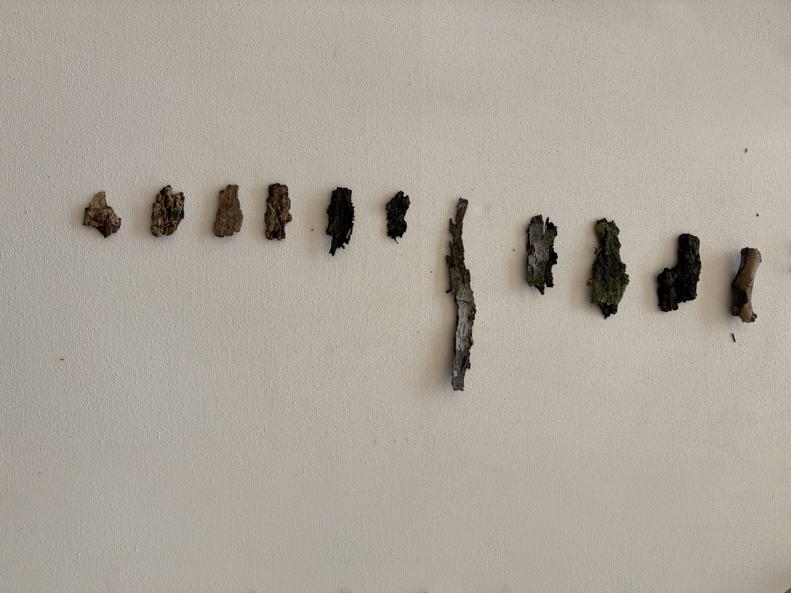

[03]
Formas que Acompañan
el Cuerpo
- Sección
- Cortezas y Texturas
- Material
- Joyería
Proyecto de joyería entendido como objeto, gesto y relación con el cuerpo. Piezas que exploran escala, tactilidad y presencia material.
